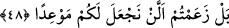
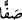

48. Ve hepsi sıra sıra Rabbinin huzûruna çıkarılmışlardır: Andolsun ki sizi ilk
defasında yarattığımız şekilde bize geldiniz. Oysa size vaad edilenlerin tahakkuk
edeceği bir zaman tayin etmediğimizi sanmıştınız, değil mi?
“Ve hepsi sıra sıra Rabbinin huzûruna çıkarılmışlardır:” Kıyâmet günü haşr olunan
bütün yaratılmışlar senin Rabb’ine, yâni O’nun hükmüne ve hesâbına sunulmuşlardır.
“__WORD__ Saffen” kelimesi müfred/tekil olmakla birlikte onunla cem‘/çoğul kastedilmiştir.
Yâni ‘sıralar hâlinde’ demektir. Onlar birbirine karışmadan ve tamamen ayrı olmaksızın
birbiri ardınca saflar hâlinde dizilmişlerdir. Onların bu hâli, onları tanıması için değil
haklarında istediği hükmü vermesi için padişaha arz olunan bir orduya benzetilmiştir.
Orada onlara denilir ki: “Andolsun ki sizi ilk defa yarattığımız şekilde” hiç malınız
ve evlâdınız olmadığı halde, yalın ayak, başı açık ve çırılçıplak “bize geldiniz!”
Âişe (r.anhâ) dan rivâyet edilmiştir: “Yâ Rasûlallah (s.a.), insanlar kıyâmet günü
nasıl haşr olunacak?” diye sordum. “Çırılçıplak ve yalın ayak.” buyurdu. “Kadınlar da
mı öyle olacak?” dedim. “Evet” buyurdu. Bunun üzerine ben: “Ey Allah’ın Rasulü, biz
utanırız.” dedim. “Ey Âişe, o günkü işin şiddetinden insanlar birbirine bakmaya fırsat
bulamazlar.” buyurdu.[186]
et-Te’vîlâtü’n-Necmiyye’de der ki: “Ve hepsi sıra sıra Rabbinin huzûruna
çıkarılmışlardır” Yâni, peygamberler, velîler, mü’minler, kâfirler ve münâfıklar sıra
sıra dizilmişlerdir. Bu halde iken onlara denilir ki: “Andolsun ki sizi ilk defa
yarattığımız şekilde” yâni beş saf hâlinde; peygamberler bir saf, velîler bir saf,
mü’minler bir saf, kâfirler bir saf ve münâfıklar bir saf olarak “bize geldiniz.”
Ey yeniden diriltilmeyi inkâr eden kâfirler, “Oysa size vaad edilenlerin tahakkuk
edeceği bir zaman tayin etmediğimizi sanmıştınız, değil mi?” Bu ifâde azarlama ve
başa kakma içindir. Yâni siz dünyada iken, size peygamberlerin lisanıyla “yeniden
diriltilip yaptıklarınızın karşılığını göreceğinizi” vaad ettiğimizde bunun hiçbir zaman
vâki olmayacağını zan ve iddiâ etmiştiniz, değil mi?”
Âyet, Allah Teâlâ’nın izzetine, azametine, celâl ve kahır sıfatlarından bir kısmını ızhâr
etmesine ve adâletinin eserlerine işaret etmektedir. Ta ki uyuyanlar gaflet uykusundan
uyansın, o günde kurtuluşa ermek için gereken sebeplere sarılsınlar. Hak Teâlâ’nın
hitâbı ve cevâbı için gizli ve açık işlerini ıslah etsinler. Çünkü dönüş ve varış O’nadır.
Allah’a arz en büyük arzdır, padişahlara arz olunmak gibi değildir.
Utbetü’l-Havvâs der ki: “Utbetü’l-gulam benim yanımda gecelemişti. Ağlamaya
başladı. Sonunda bayıldı. Ona: “Niçin ağlıyorsun?” dedim. “Allah’a arz olunmayı
hatırlamak, sevenlerin mafsallarını birbirinden ayırdı.” dedi.